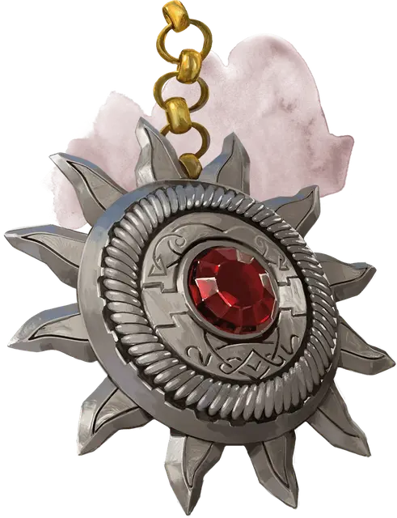

Святой символ Равенкинд
Holy Symbol of Ravenkind
Чудесный предмет, легендарный (требуется настройка жрецом с добрым мировоззрением или паладином с добрым мировоззрением)

Рекомендованная стоимость от 50 001 зм
Святой символ Равенкинд – это уникальный святой символ, посвящённый добросердечным верующим Баровии. Он старше чем основание любой церкви в Баровии. Согласно легенде, он был принесен паладину по имени Лугдана гигантским вороном или ангелом в обличье гигантского ворона. Лугдана использовал святой символ, чтобы искоренять и уничтожать вампирские гнёзда до самой своей смерти. Первосвященники Равенлофта хранили и носили святой символ после кончины Лугданы.
Святой символ выполнен в виде платинового амулета в форме солнца, с большим кристаллом, закреплённым в его центре.
Святой символ имеет 10 зарядов для использования приведенных ниже свойств. Он восполняет 1к6+4 зарядов на заре каждого дня.
Сдерживание вампиров. Действием вы можете потратить 1 заряд и выставить святой символ, чтобы он создал вспышку священной мощи. Вампиры и порождения вампира в 30 футах от святого символа при этой вспышке должны пройти спасбросок Мудрости Сл 15. При провале, они становятся парализованными на 1 минуту. Они могут повторять спасбросок в конце каждого своего хода, при успехе снимая с себя этот эффект.
Изгнание нежити. Если вы обладаете умениями «Изгнание нежити» или «Изгнание нечисти», вы можете потратить 3 заряда при применении этого умения и использовании этого святого символа. При этом нежить получает помеху на спасброски против эффектов этих умений.
Солнечный свет. Действием вы можете потратить 5 зарядов, пока демонстрируете святой символ, чтобы он начал производить яркий свет в 30-футовом радиусе и тусклый свет в следующих 30 футах. Свет является солнечным и длится 10 минут или пока вы не решите прекратить этот эффект (действие не требуется).